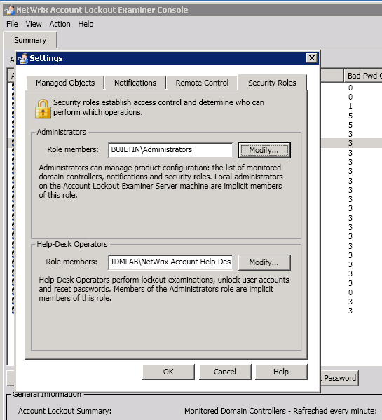
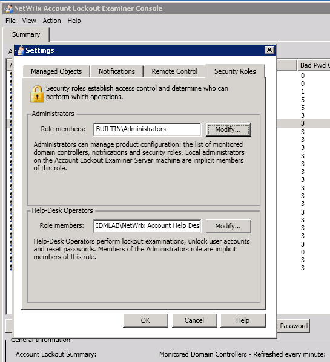

When trying to access the Help-Desk portal, a non-admin user gets a "You do not have a
Helpdesk operator permissions" message or "Permission denied" error (error code -2146828218)
This message occurs because the user whose credentials were used to enter the Helpdesk portal is not granted Help-Desk operator role in the product settings.
To grant a user access to the Help-Desk portal, add this user to the Help Desk Operators role. To do this, perform the following steps: 1. In the Account Lockout Examiner console, navigate to File > Settings and select the Security roles tab. 2. In the Help-Desk Operators section, click the Modify button. 3. In the dialog that opens, click the Add button and specify user(s) that you want to add to this role.  If the issue persists, check that Authentication options are configured properly in IIS: 4. Start the IIS Manager and navigate to your Account Lockout Examiner web portal virtual directory (by default - Default Web SiteALE). 5. Select this folder by left-clicking on it and look for the Authentication feature under IIS block in the central pane. Double-click on it. 6. Make sure that "Anonymous Authentication" is disabled.
This message occurs because the user whose credentials were used to enter the Helpdesk portal is not granted Help-Desk operator role in the product settings.
To grant a user access to the Help-Desk portal, add this user to the Help Desk Operators role. To do this, perform the following steps: 1. In the Account Lockout Examiner console, navigate to File > Settings and select the Security roles tab. 2. In the Help-Desk Operators section, click the Modify button. 3. In the dialog that opens, click the Add button and specify user(s) that you want to add to this role.  If the issue persists, check that Authentication options are configured properly in IIS: 4. Start the IIS Manager and navigate to your Account Lockout Examiner web portal virtual directory (by default - Default Web SiteALE). 5. Select this folder by left-clicking on it and look for the Authentication feature under IIS block in the central pane. Double-click on it. 6. Make sure that "Anonymous Authentication" is disabled.